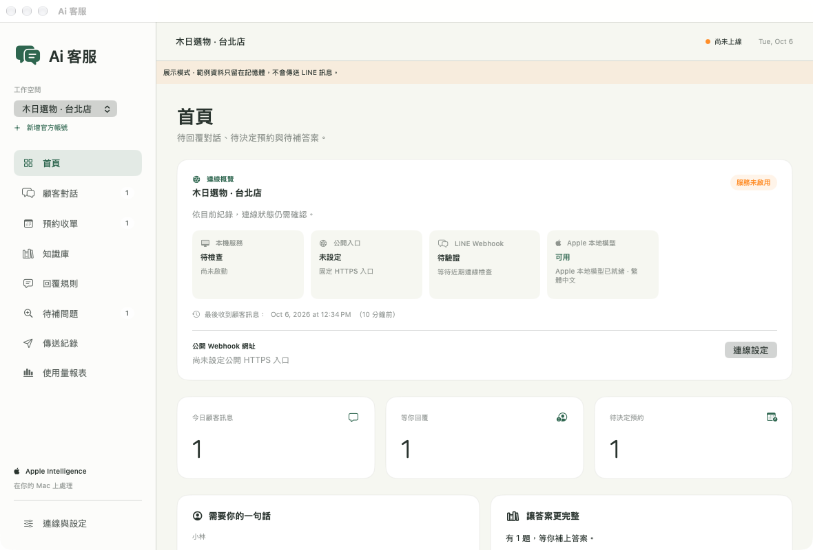
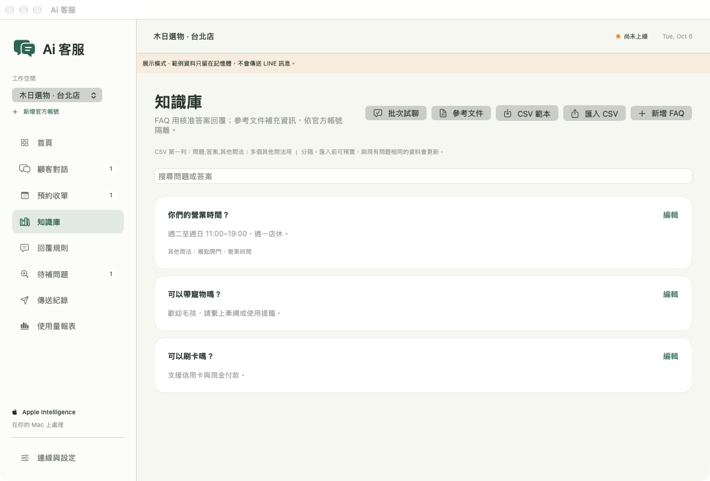

那莫好聽｜形象網站範本
以音樂品牌為範本，整理品牌故事、課程內容與常見問題。

作品展示
形象網站與 AI 客服，看看實際畫面。
以音樂品牌為範本，整理品牌故事、課程內容與常見問題。
greet｜AI 客服
以下是 Greet 核心 App 的功能展示畫面，使用內建的合成店家與對話資料；不含正式顧客紀錄，也不傳送 LINE 訊息。



本機 App 需要 macOS 27 或以上；本機 AI 功能需要支援 Apple Intelligence 的 Mac，並完成模型設定。LINE 串接與實際回覆需依店家環境驗收，導入方式依需求評估。